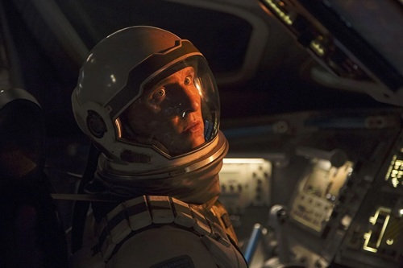

Mathew McConaughey
Joseph Cooper
Ancien pilote de la NASA reconverti en fermier, choisi pour mener la mission spatiale en quête d'une nouvelle planète habitable.
Dans un futur proche où la Terre se meurt, Cooper, pilote et ancien ingénieur, doit faire le choix le plus difficile de sa vie, quitter ses enfants pour embarquer dans une mission spatiale désespérée à la recherche d'une nouvelle planète habitable pour l'humanité.

Découvrez les scènes les plus épiques et les extraits exclusifs de nos tournages.
Scène du film Interstellar

Scène du film Interstellar

Scène du film Interstellar
Acteurs et membres de l'équipe qui ont contribué à la réalisation de ce film.
Ancien pilote de la NASA reconverti en fermier, choisi pour mener la mission spatiale en quête d'une nouvelle planète habitable.

La fille de Cooper, brillante scientifique à la NASA qui travaille à sauver l'humanité depuis la Terre.

Astronaute et scientifique, fille du Professeur Brand, membre clé de l'équipage.

version jeune de Murph, curieuse et proche de son père avant son départ.

Physicien génial de la NASA et mentor de Cooper, architecte secret de la mission.

Robot de combat reconverti en assistant de l'équipage, loyal et sarcastique.

Chef de la première expédition spatiale, dont la vraie nature se révèle tardivement dans le film.

Pour Interstellar, Nolan souhaitait explorer la relativité et les trous de ver de manière scientifiquement rigoureuse, tout en racontant une histoire profondément humaine sur l'amour et le sacrifice.
Découvrez les raisons qui font de ce film une expérience incontournable.
Interstellar a connu un succès notable lors de la saison des récompenses 2014-2015, remportant plusieurs prix prestigieux malgré une présence plus discrète dans les catégories majeures (Meilleur film, Meilleur réalisateur).
Aux 87e Oscars, le film a remporté l'Oscar du meilleur effets visuels, sur cinq nominations au total, dont celles pour la musique originale, le mixage et le montage sonore, et la direction artistique. Le prix a été décerné aux superviseurs Paul Franklin, Andrew Lockley, Ian Hunter et Scott Fisher. Aux British Academy Film Awards (BAFTA), Interstellar a remporté le prix des meilleurs effets visuels spéciaux, en plus de nominations pour la meilleure musique originale, la meilleure photographie et les meilleurs décors.
Du côté des Critics' Choice Awards, le film a remporté le prix du meilleur film de science-fiction/horreur, sur sept nominations.
Aux Saturn Awards, sa performance a été particulièrement forte : le film a reçu onze nominations et a remporté six prix, dont celui du meilleur film de science-fiction.
En résumé, les véritables victoires d'Interstellar se concentrent principalement sur les effets visuels (Oscars et BAFTA), tandis que les autres catégories listées dans ton document (meilleure photographie, meilleure musique, meilleurs décors, etc.) sont restées au stade de la nomination, sans victoire.
Je considère le cinéma comme une forme d'art capable d'évoquer des émotions chez-nous, les êtres humains. Interstellar fait partie de ces rares œuvres qui font naître des sentiments profonds et inexplicables sur ce que signifie être vivant, conscients de notre existence éphémère, mais capables d'imaginer au-delà du temps, jusqu'à l'infini.
Son exploration de l'amour, du sacrifice et de l'inconnu est profondément humaine et nous relie à quelque chose de plus grand. Les images sont à couper le souffle, la bande sonore est d'une beauté envoûtante, et l'histoire résonne autant sur le plan émotionnel que philosophique.
Ce film m'a fait pleurer, non pas seulement à cause de sa tristesse, mais à cause de sa beauté pure et bouleversante.
Trous noirs, relativité, singularité, cinquième dimension ! Les discours sont grandioses. Il y a cependant un problème. Livré sur un ton familier et précipité, une grande partie de ces fascinantes notions ésotériques, pourtant centrales à l'intrigue, est difficile à comprendre, et parfois même à entendre. Le compositeur Hans Zimmer produit de monstrueuses montées d'orgue qui, par moments, étouffent les dialogues comme une coulée de lave. Les acteurs semblent dépassés par la production.